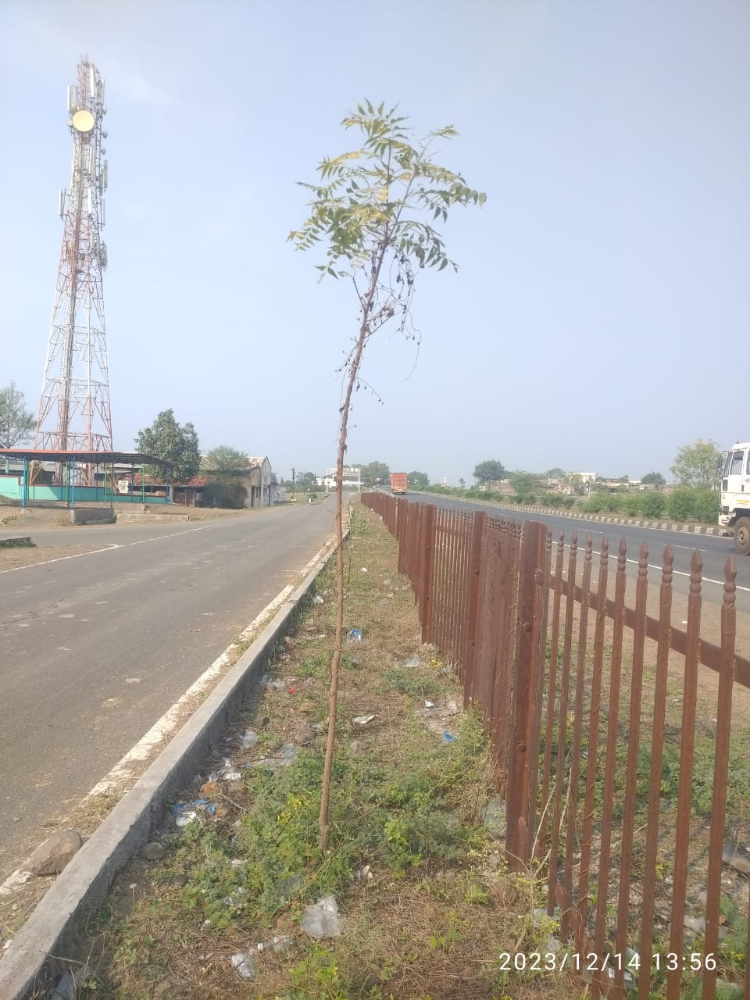
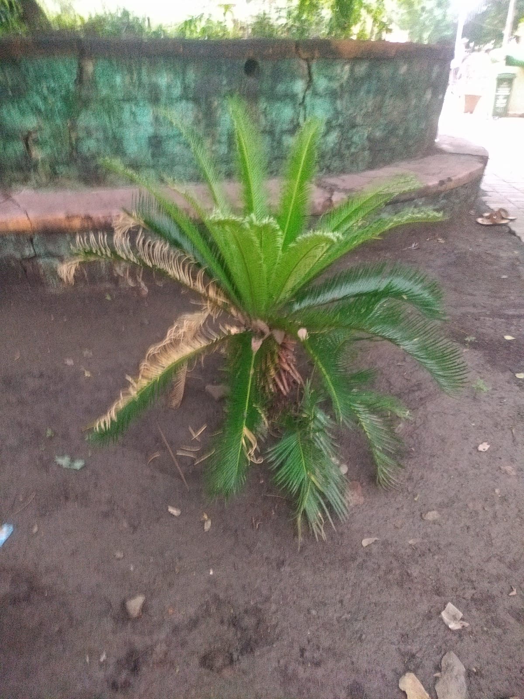

<!doctype html>
<html lang="en">
	<head>
		<meta charset="utf-8">
		<meta name="viewport" content="width=device-width, initial-scale=1">
		<link rel="shortcut icon" type="image/x-icon" href="https://rahulshahare.github.io/map/Vriksham-marker-with-shadow.png">
	    	<title>Map test for #V</title>
		<link href="https://cdn.jsdelivr.net/npm/bootstrap@5.3.2/dist/css/bootstrap.min.css" rel="stylesheet" integrity="sha384-T3c6CoIi6uLrA9TneNEoa7RxnatzjcDSCmG1MXxSR1GAsXEV/Dwwykc2MPK8M2HN" crossorigin="anonymous">
	 	<link rel="stylesheet" href="https://unpkg.com/leaflet@1.9.4/dist/leaflet.css" integrity="sha256-p4NxAoJBhIIN+hmNHrzRCf9tD/miZyoHS5obTRR9BMY="     crossorigin=""/>
	     	<link rel="stylesheet" href="MarkerCluster.Default.css"/>
 		<!-- Make sure you put this AFTER Leaflet's CSS -->
 		<script src="https://unpkg.com/leaflet@1.9.4/dist/leaflet.js"     integrity="sha256-20nQCchB9co0qIjJZRGuk2/Z9VM+kNiyxNV1lvTlZBo="     crossorigin=""></script>
 		<script src="SmoothWheelZoom.js"></script>
 		<script src="leaflet.markercluster.js"></script>
		<script src="https://cdn.jsdelivr.net/npm/bootstrap@5.3.2/dist/js/bootstrap.bundle.min.js" integrity="sha384-C6RzsynM9kWDrMNeT87bh95OGNyZPhcTNXj1NW7RuBCsyN/o0jlpcV8Qyq46cDfL" crossorigin="anonymous"></script>
 
		<style>
		#map { height: 100vh; }

		.bottomGradient{
			background-image: linear-gradient(to bottom, rgba(255,0,0,0), rgb(0 0 0 / 9%));
		}
.topGradient {
    background-image: linear-gradient(to top, rgba(255,0,0,0), rgb(0 0 0 / 9%));
    z-index: 999;
    height: 44px;
}
.getContentCenter{
	display: flex;
	flex-direction: column;
	align-items: center;
}
</style>
  </head>
  <body>


    <div id="container-fluid">

        <div id="map"></div>
        <!-- <div id="map" style="height: 400px;"></div> -->
        <div id="marker-list"></div>
  
    </div>
    <script>
        var map = L.map('map').setView([20.0231391, 78.5477347], 13);

        // Add a tile layer to the map (e.g., OpenStreetMap)
        L.tileLayer('https://{s}.basemaps.cartocdn.com/rastertiles/voyager/{z}/{x}/{y}{r}.png', {
            maxZoom: 19,
        }).addTo(map);

        var greenIcon = L.icon({
            iconUrl: 'Vriksham-marker-with-shadow.png',
            iconSize:     [30, 30], // size of the icon
            shadowSize:   [40, 50], // size of the shadow
            iconAnchor:   [22, 94], // point of the icon which will correspond to marker's location
            shadowAnchor: [12, 92],  // the same for the shadow
            popupAnchor:  [-3, -76] // point from which the popup should open relative to the iconAnchor
        });

        var markersArray = [];

        // Function to add a marker to the map and markersArray array
        function addMarker(id, lat, lng, markerDetail) {
            // Create a new marker instance
            var marker = L.marker([lat, lng],{icon: greenIcon});

            // Add the marker to the map
            marker.addTo(map);
            marker.bindPopup(markerDetail);

            // Add the marker to the markersArray array
            markersArray.push({ _id: id, instance: marker });
        }

        // Function to update the markersArray on the map
        function rendermarkersArray() {
            markersArray.forEach(function(marker) {
                marker.instance.addTo(map).on('click',function(e){
                    console.log(e.latlng)
                    FlyToLocation(e.latlng.lat, e.latlng.lng)

                   

                }); // Add each marker instance to the map
            });
            console.log('render',markersArray)
        }
        
        // Function to clear a specific marker by ID
        function clearMarker(id) {
            console.log(markersArray);
            
            markersArray = markersArray.filter(function(marker) {
                if (marker._id === id) {
                    map.removeLayer(marker.instance); // Remove the marker from the map
                    return false; // Exclude this marker from the new array
                }
                return true; // Keep this marker in the new array
            });
            
            console.log('removed',markersArray);
            //rendermarkersArray(); // Render all markersArray on the map


        }

        // Example usage:
        addMarker(1, 19.997499, 78.534951,''); // Add a marker
        addMarker(2, 20.022826, 78.565722,"POPUP2");  
        addMarker(3, 20.032241, 78.54921, "POPUP3"); 
        addMarker(4, 19.65679, 78.52252, "POPUP4");
        addMarker(5, 20.026408, 78.548632, '');

        rendermarkersArray(); // Render all markersArray on the map

        // To remove a marker later
        //clearMarker(1);

        

        var current_zoom_level =13;

        map.on('zoomend', function (e) {
            current_zoom_level = e.target._zoom;
            //console.log(e.target._zoom);
        });

        function FlyToLocation(lat,long){
            map.flyTo([lat, long],current_zoom_level, {
                    animate: true,
                    duration: 0.25, // in seconds
                    easeLinearity : 0.25
                });
        }


    </script>
  </body>
</html>


